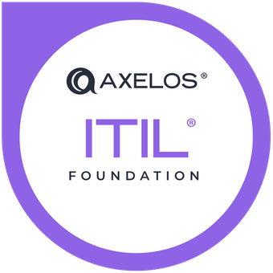
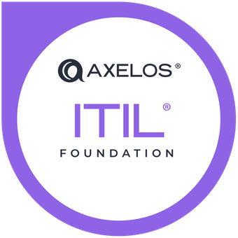

About Me
Hello! I am a DevOps Engineer with 5 years of IT experience. My background is in networking and technical support. I have a passion for optimization and automation.
Hello! I am a DevOps Engineer with 5 years of IT experience. My background is in networking and technical support. I have a passion for optimization and automation.
You can find all of the repositories for these projects on my Github.
This site! This is a static website hosted in an AWS S3 bucket and delivered through AWS Cloudfront and Route 53. A "visitor counter" was created using DynamoDB, a Python Lambda script, and an API Gateway. The back end services are stored as IaC using Terraform. A CI/CD pipeline was created using Github Actions. Cypress is used for testing the API and is integrated into the action to ensure everyting works before being deployed.
Maintained the network infrastructure for the Federal Law Enforcement Training Center and the Department of Homeland Security. Led the auditing process of over 100 network closets improving our refence documentation and identifying key areas for improvement.
Monitored FTTH access network using PRTG to ensure maximum uptime and minimal network bottlenecks. Performed after hours network maintenance to ensure a secure and stable network without causing downtime for customers.
Worked on a rotating team to handle tier 1 tech support calls for business and residential customers. Collaborated with the team and utilized shared knowledge to resolve issues in a timely manner. Maintained detailed notes on ticket resolution to contribute to the knowledge base.


 

Core studies focused on Implementation of Network Solutions, Network Security, and Cloud Deployment and Operations.
Other courses include Linux Foundations, Introduction to Python, and Data Management Foundations